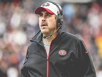
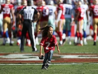

CSC 49ers Fan Site!
We Are The Niners
Latest Videos
Featured
-
49ers Place Tight End Garrett Celek on Injured Reserve; Re-sign Linebacker Shayne Skov
The San Francisco 49ers have placed TE Garrett Celek on the Injured Reserve List and re-signed LB Shayne Skov to a two-year deal.
-

Top 5 Notes from Jim Tomsula's Monday Press Conference
On the heels of a 26-20 overtime victory against the Chicago Bears, Jim Tomsula met with the media on Monday to go over his takeaways from the win.
-

Faithful 49 Sweepstakes: Kickoff Kid
This season, Faithful 49 presented by Esurance is choosing one member’s child to be the 49ers Kickoff Kid on the field at Levi’s® Stadium when the St. Louis Rams come to town on January 3, 2016.